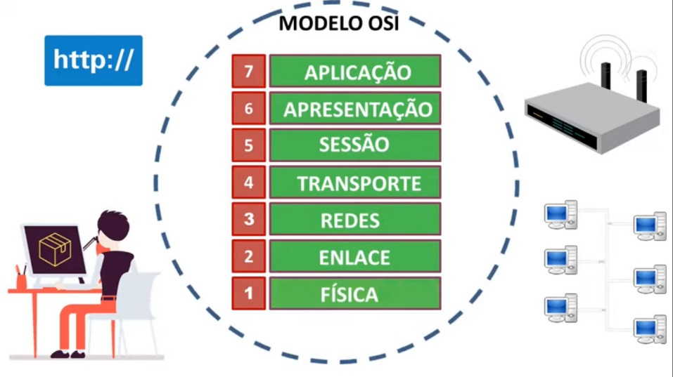
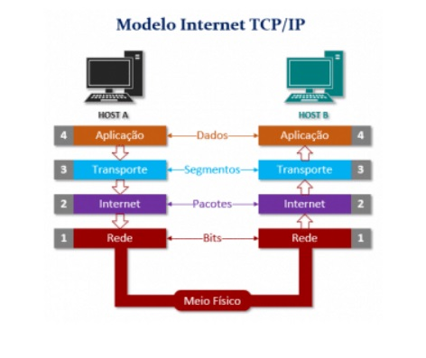

<!DOCTYPE html>
<html lang="en">

<head>
  <link rel="stylesheet" href="stile.css">
  <meta charset="UTF-8">
  <meta http-equiv="X-UA-Compatible" content="IE=edge">
  <meta name="viewport" content="width=device-width, initial-scale=1.0">
  <title>Serviços de rede</title>
</head>

<body>

</html>

<body bgcolor="dedede">
  <title>Serviços de rede</title>
  <center>
    <h1>Serviços de rede</h1>
    <nav>
      <li><a href="#MODELOOSI"> MODELO OSI </a></li>
      <li><a href="#MODELO"> MODELO TCP/IP </a></li>
      <li><a href="#UDP">UDP</a></li>
      <li><a href="#FTP"> FTP </a></li>
      <li><a href="#DNS">DNS</a></li>
      <li><a href="#DHCP"> DHCP </a></li>
      <li><a href="#HTTP-HTTPS">HTTP-HTTPS</a></li>
      <li><a href="#WEBSERVER"> WEBSERVER </a></li>


  </center>

  </nav>

  <div class="MODELOOSI">
    <section id=" MODELOOSI">
      <h2> MODELO OSI</h2>
      <p>O OSI é o primeiro modelo padrão de comunicação entre sistemas de computadores e redes, ele faz uso de sete
        camadas para garantir essa conversa. A maioria das empresas da área de computadores e telecomunicações o adotou
        no início dos anos 80. A partir daí, a Organização Internacional de Normalização (ISO) o transformou na
        principal referência em 1984.
        <br>
        Todo o conceito do modelo de Interconexão de Sistemas Abertos é representado por sete camadas que, juntas,
        realizam a comunicação através de uma rede.
        <br>
        Sua importância é enorme, pois ajuda usuários e profissionais a determinar o hardware e software necessários
        para construir suas redes, por exemplo. Além disso, facilita na hora de encontrar problemas em potencial, já que
        isso pode ser visualizado de forma individual em cada camada.
        <br>
        Por último, poder definir quais aplicações e dispositivos a parte da rede vai trabalhar é algo que poupa tempo e
        recursos para uma empresa.
      </p>
    <center></center>
      
    </section>

  </div>

  <div class="MODELO">
    <section id="MODELO">
      <h2>MODELO TCP/IP</h2>
      <p>
        o IP e o TCP são dois protocolos diferentes da rede de computadores. O IP é o “CPF” dos computadores, sigla para Internet Protocol, ou seja, protocolo de internet. É o principal protocolo de comunicação responsável tanto pelos formatos quanto pelas regras de troca de dados e mensagens entre computadores de uma ou várias redes conectadas à internet.
        <br>
        Ele é um rótulo composto por números atribuídos a um dispositivo conectado à rede. Cada dispositivo possui um endereço IP que o identifica, permitindo que ele se comunique e troque dados com outros dispositivos conectados.
      </p>
      <p>
      <center></center>
    </section>
  </div>

  <div class="UDP">
    <section id="UDP">
      <h2>UDP</h2>
      <p>O Protocolo UDP é um protocolo de comunicação utilizado em toda a internet para transmissões com validade especialmente limitada, tais como reproduções de vídeo ou pesquisas no DNS. Ele acelera as comunicações ao não estabelecer formalmente uma conexão antes que os dados sejam transferidos. Isso permite que os dados sejam transferidos muito rapidamente, mas também pode fazer com que pacotes se percam em trânsito além de criar oportunidades de exploração na forma de ataques DDoS.</p>
    </section>
  </div>

  <div class="FTP">
    <section id="FTP">
      <h2>FTP</h2>
      <p>
        O FTP (File Transfer Protocol) ou Protocolo de Transferência de Arquivos, em português, é um protocolo usado para transferir arquivos por uma rede de computadores, desde uma local à internet. Basicamente, permite a troca de arquivos entre dois computadores de modo direto, em que um ganha acesso às pastas do outro.
      </p>
      
    </section>

  </div>

  <div class="DNS">
    <section id="DNS">
      <h2>DNS</h2>
      <p> Os servidores DNS convertem solicitações de nomes em endereços IP, controlando qual servidor um usuário final alcançará quando digitar um nome de domínio no navegador da web. Essas solicitações são chamadas consultas. </p>
      
    </section>
  </div>

  <div class="DHCP">
    <section id="DHCP">
      <h2>DHCP</h2>
      <p>
        DHCP é um protocolo ou serviço do padrão TCP/IP utilizado em rede de computadores que atribui um endereço IP (Internet Protocol) de forma automática a qualquer dispositivo conectado.
      </p>
      
    </section>

  </div>

  <div class="HTTP-HTTPS">
    <section id="HTTP-HTTPS">
      <h2>HTTP/HTTPS</h2>
      <p>O HTTP (HyperText Transfer Protocol) nada mais é do que o protocolo transferência de hipertexto padrão da internet. Isso quer dizer que é por meio dele que os dados se transferem entre o seu computador/smartphone e os servidores de hipermídia da internet, ou seja, é basicamente uma forma de comunicação.
      <br>
      O protocolo HTTPS (HyperText Transfer Protocol Secure) é idêntico ao HTTP e surgiu com o intuito de substituí-lo, porém, foi adicionada uma camada do SSL (Secure Sockets Layer) ou de TLS (Transfer Layer Security), o seu sucessor. Como os próprios nomes e termos já dizem, no HTTPS foram adicionados alguns princípios de segurança, como confidencialidade, integridade e autenticação.
    </p>
    
    </section>
  </div>

  <div class="WEBSERVER">
    <section id="WEBSERVER">
      <h2>WEBSERVER</h2>
      <p> De maneira simplificada, um servidor web é um computador responsável pelo armazenamento, processamento e entrega dos arquivos dos sites para os navegadores.
      <BR>
        Através deste processo, os servidores web carregam e entregam a página solicitada para o navegador do usuário — como o Google Chrome, por exemplo. Os servidores web também utilizam o Simple Mail Transfer Protocol (SMTP) e File Transfer Protocol (FTP) para processar arquivos para emails e armazenamento.</p>
       
    </section>

  </div>

</body>

</html>